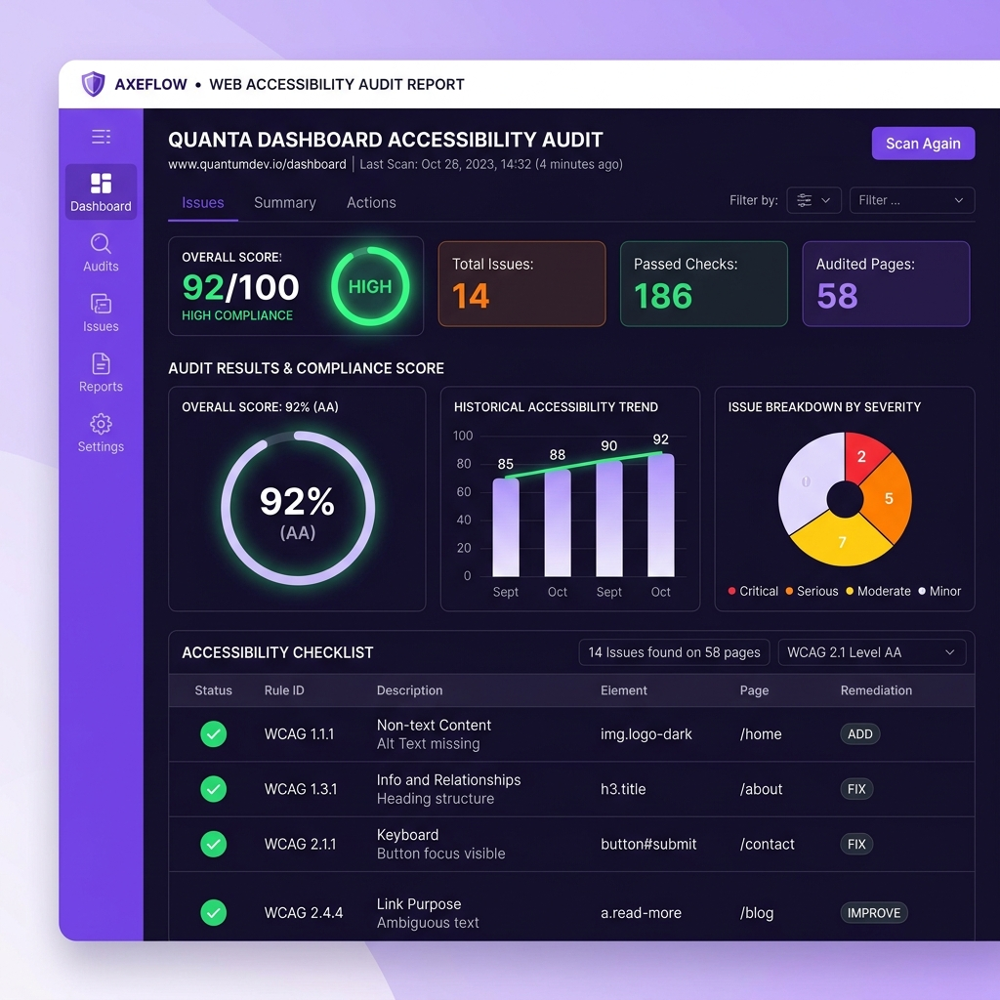

Aura Flow
A real-time workspace collaborative analytical dashboard. Built using a custom glassmorphism design system, utilizing WebSockets for zero-latency data stream synchronization, and Express backend servers for data distribution.
A comprehensive log of web applications, accessible design systems, and server-side utilities I have developed.
A real-time workspace collaborative analytical dashboard. Built using a custom glassmorphism design system, utilizing WebSockets for zero-latency data stream synchronization, and Express backend servers for data distribution.

An automated auditing tool validating HTML pages against WCAG 2.1 color contrast and structure requirements. Operates as a background process using Puppeteer to load pages, run axe-core scripts, and compile JSON reports on broken ARIA attributes and focus traps.
A high-performance serverless microservice offering environmental telemetry data. Designed with optimized PostgreSQL database index keys and Express router caching, achieving sub-40ms server responses under peak load cycles.
A fully semantic, WCAG-compliant design system library. Standardizes color tokens with custom CSS variables, includes accessible keyboard focus rings, responsive typography scales, and modular template structures.
A lightweight and lightning-fast e-commerce shopping platform focusing on performance. Uses service workers for offline asset caching and responsive CSS Grids to support viewports down to 320px.
An offline-first task organizer prioritizing keyboard navigation. Structured with custom screen-reader focus tracking and HTML forms connected to local client storage nodes (IndexedDB).